Apps
This page lists known public deployments of iSEE apps.
Links are ordered in reverse order of iSEE package version (i.e., those using the most recent version appear first).
Rigby et al., bioRxiv, 2023
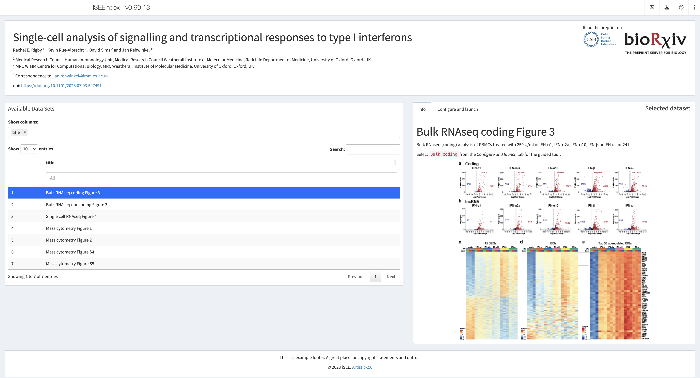
Shiny app https://rehwinkellab.shinyapps.io/ifnresource/
Authored by Rehwinkel group
Using iSEE {2.12.0}, iSEEindex {0.99.13}, iSEEde {0.99.0}
More: This app accompanies the preprint “Single-cell analysis of signalling and transcriptional responses to type I interferons” https://www.biorxiv.org/content/10.1101/2023.07.03.547491v1.
FGCZ Fancy Single Cell Explorer
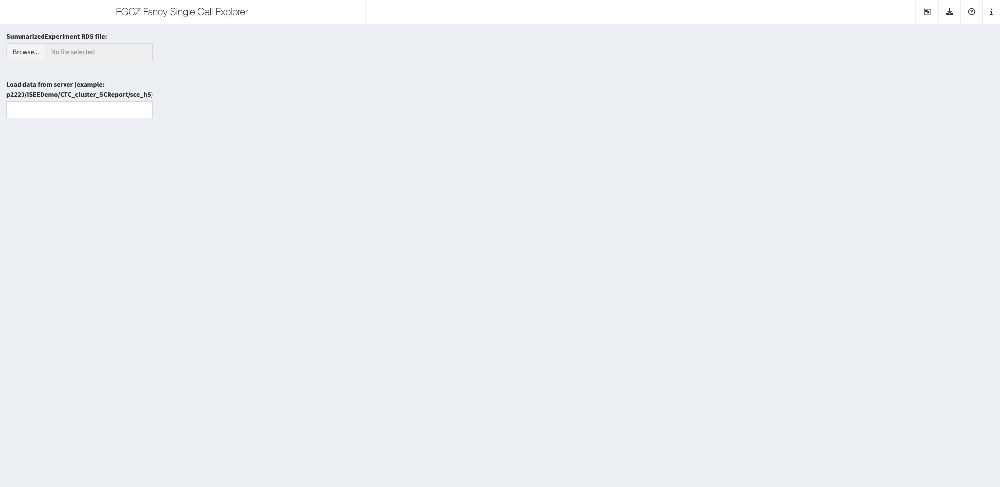
Shiny app https://fgcz-shiny.uzh.ch/fgcz_iSEE/
Authored by Functional Genomics Center Zurich (FGCZ)
Using iSEE {2.12.0}
More: This app is listed at https://fgcz-shiny.uzh.ch/connect/, among other interactive apps from the same author.
Moffitt et al., Science, 2018
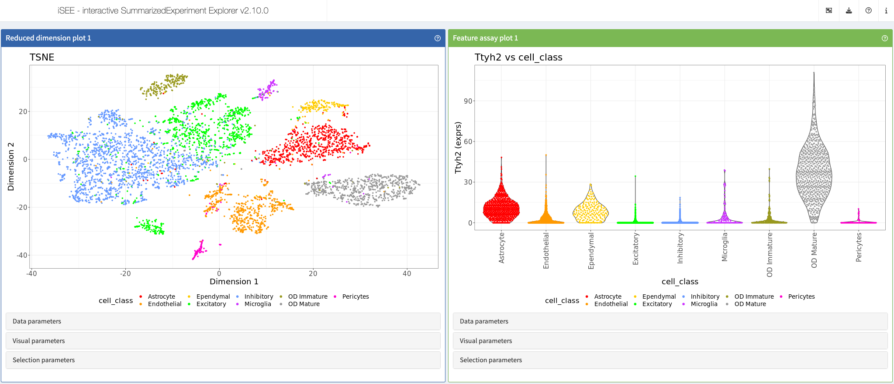
Shiny app https://moffittlab.connect.hms.harvard.edu/iSEE_hypothalamus/
Authored by Center for Computational Biomedicine (CCB) Harvard Medical School and Moffitt Lab
Using iSEE {2.10.0}
More: This app showcases data from the article “Molecular, spatial, and functional single-cell profiling of the hypothalamic preoptic region” https://www.science.org/doi/10.1126/science.aau5324 and is listed at https://moffittlab.connect.hms.harvard.edu/merfish/merfish_homepage.html, among other interactive apps from the same author.
Petukhov et al., Nat Biotech, 2021
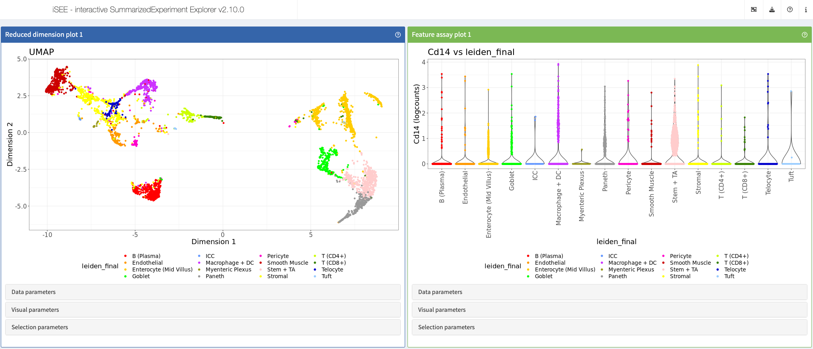
Shiny app https://moffittlab.connect.hms.harvard.edu/iSEE_ileum/
Authored by Center for Computational Biomedicine (CCB) Harvard Medical School and Moffitt Lab
Using iSEE {2.10.0}
More: This app showcases data from the article “Cell segmentation in imaging-based spatial transcriptomics” https://www.nature.com/articles/s41587-021-01044-w and is listed at https://moffittlab.connect.hms.harvard.edu/merfish/merfish_homepage.html, among other interactive apps from the same author.
Kim et al, JNeurosci, 2023
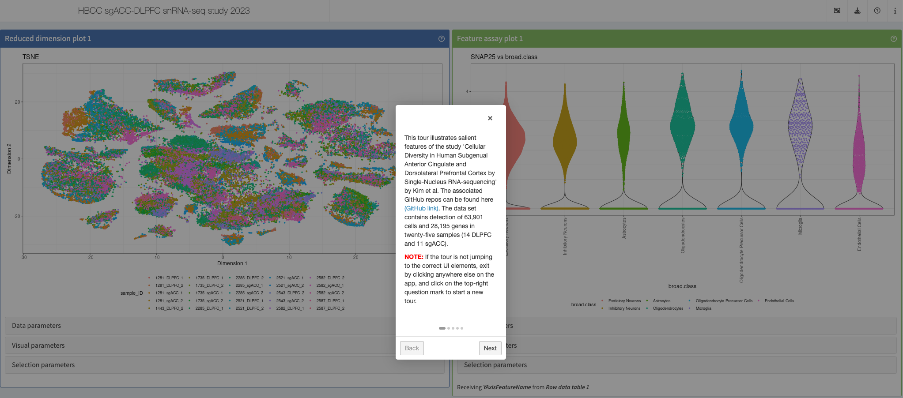
Shiny app https://hbcc-nimh.shinyapps.io/shinyApp_JNS2023/
Authored by Human Brain Collection Core (HBCC) - NIMH
Using iSEE {2.10.0}
More: This app accompanies the “Cellular Diversity in Human Subgenual Anterior Cingulate and Dorsolateral Prefrontal Cortex by Single-Nucleus RNASequencing” https://doi.org/10.1523/jneurosci.0830-22.2023.
Kwon et al., bioRxiv, 2023
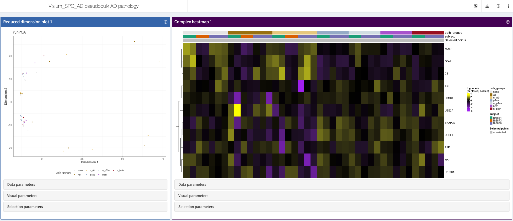
This app showcases spatially resolved transcriptomics of the inferior temporal cortex, as pseudobulks.
Shiny app https://libd.shinyapps.io/Visium_SPG_AD_pseudobulk_AD_pathology_wholegenome/
Authored by The Lieber Institute for Brain Development
Using iSEE {2.10.0}
More: This app accompanies the preprint “Influence of Alzheimer’s disease related neuropathology on local microenvironment gene expression in the human inferior temporal cortex” https://doi.org/10.1101/2023.04.20.537710.
iSEE COVID Hub
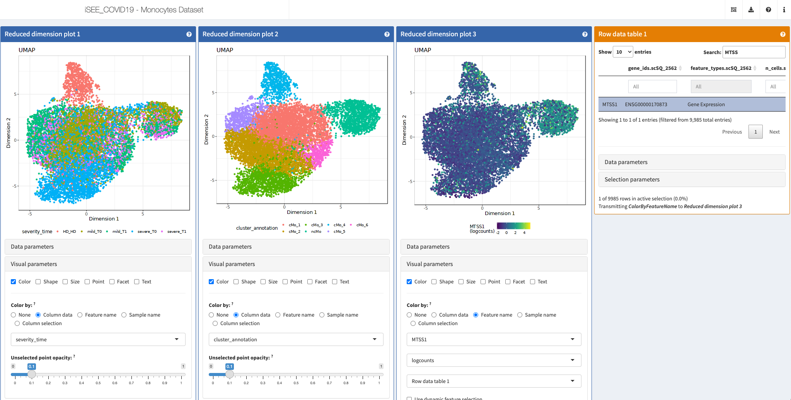
Shiny apps:
http://shiny.imbei.uni-mainz.de:3838/iSEE_covidIT_Bcells/ (B cells)
http://shiny.imbei.uni-mainz.de:3838/iSEE_covidIT_Monocytes (Monocytes)
http://shiny.imbei.uni-mainz.de:3838/iSEE_covidIT_NKcells/ (NK cells)
http://shiny.imbei.uni-mainz.de:3838/iSEE_covidIT_Tcells (T cells)
Authored by Institute of Medical Biostatistics, Epidemiology and Informatics (IMBEI)
Using iSEE {2.9.0}
More: Those apps are listed at http://shiny.imbei.uni-mainz.de:3838/iSEE_covidIT/.
Billing et al., Circulation, 2023
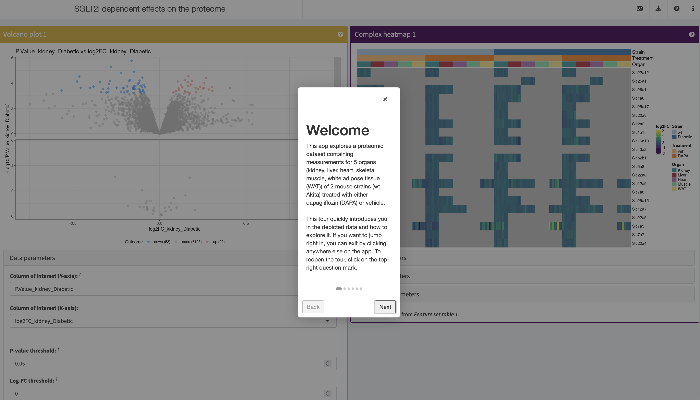
Shiny apps:
https://kidneyapp.shinyapps.io/SGLT2i_proteome/ (proteome)
https://kidneyapp.shinyapps.io/SGLT2i_phosphoproteome/ (phosphoproteome)
Authored by Vallon and Rinschen labs (La Jolla/Aarhus)
Using iSEE {2.8.0}, iSEEu {1.8.0}
More: A set of proteomic and phosphoproteomic datasets containing measurements for 5 organs (kidney, liver, heart, skeletal muscle, white adipose tissue (WAT)) of 2 mouse strains. Accompanies the publication Metabolic Communication by SGLT2 Inhibition.
Kalucka et al., Cell, 2020
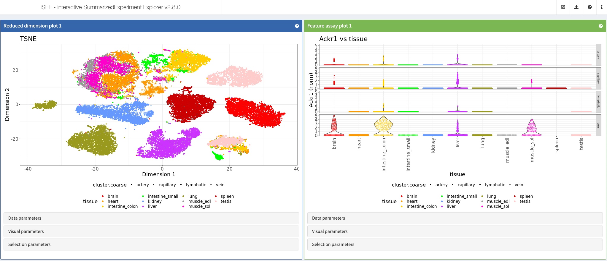
Shiny app https://vonandrian.connect.hms.harvard.edu/iSEE_Kalucka20_scECAtlas/
Authored by von Andrian Laboratory
Using iSEE {2.8.0}, iSEEu {1.5.2}
More: This app showcases data from the article “Single-cell transcriptome atlas of murine endothelial cells” https://doi.org/10.1016/j.cell.2020.01.015.
Brulois et al., Nat Commun, 2020
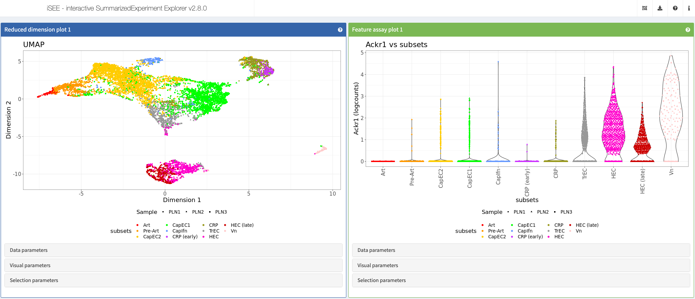
Shiny app https://vonandrian.connect.hms.harvard.edu/iSEE_Brulois20_PLN/
Authored by von Andrian Laboratory
Using iSEE {2.8.0}, iSEEu {1.5.2}
More: This app showcases data from the article “A molecular map of murine lymph node blood vascular endothelium at single cell resolution” https://doi.org/10.1038/s41467-020-17291-5.
Myocyte data sets
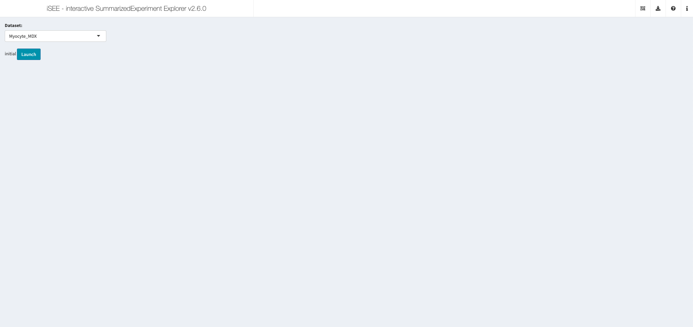
Shiny app https://shiny.mdc-berlin.de/MyoExplorer/
Authored by Max Delbrück Center
Using iSEE {2.6.0}
Upload your own SummarizedExperiment
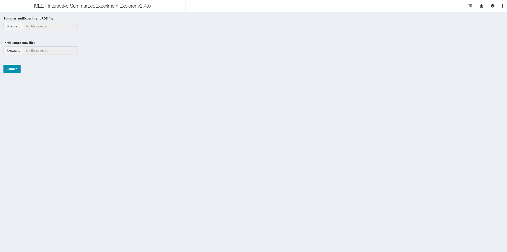
This app allows visitors to upload an RDS file that contains a SummarizedExperiment object and another optional RDS file that contains an initial configuration object.
Shiny app https://ccb-rstudio-connect.hms.harvard.edu/iSEE_enterprise/
Authored by Center for Computational Biomedicine (CCB) Harvard Medical School
Using iSEE {2.4.0}
Tran et al., Neuron, 2021
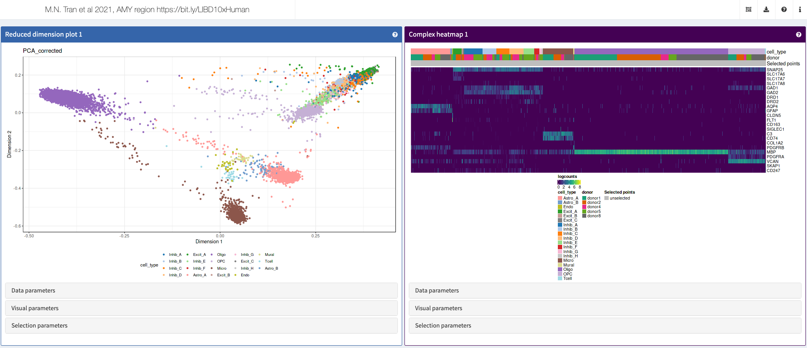
Shiny apps:
https://libd.shinyapps.io/tran2020_Amyg/
https://libd.shinyapps.io/tran2021_NAc/
https://libd.shinyapps.io/tran2021_sACC/
https://libd.shinyapps.io/tran2021_DLPFC/
https://libd.shinyapps.io/tran2021_AMY/
https://libd.shinyapps.io/tran2021_HPC/
Authored by The Lieber Institute for Brain Development
Using iSEE {2.4.0}
More: Those apps accompany the article “Single-nucleus transcriptome analysis reveals cell-type-specific molecular signatures across reward circuitry in the human brain” https://www.cell.com/neuron/fulltext/S0896-6273(21)00655-3.
Cristinelli et al., Front. Virol., 2021
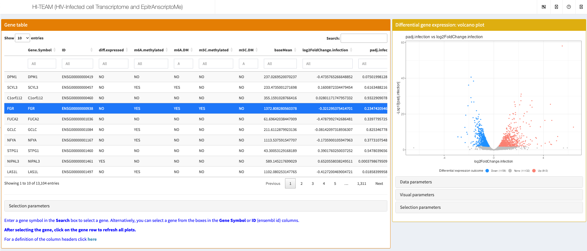
The authors developed HI-TEAM (HIV-Infected cell Transcriptome and EpitrAnscriptoMe), a user-friendly querying platform based on the iSEE interactive interface [iSEE] to explore all data or any gene of interest. More information is Shiny app http://sib-pc17.unil.ch/HIVmain.html.
Shiny app https://hi-team.unil.ch/#
Authored by Ciuffi Lab
Using iSEE {2.1.10}, iSEEu {1.1.4}
More: This app accompanies the article “Single-nucleus transcriptome analysis reveals cell-type-specific molecular signatures across reward circuitry in the human brain” https://www.frontiersin.org/articles/10.3389/fviro.2021.714475/full.
Comparison of SARS-CoV-1 and SARS-CoV-2
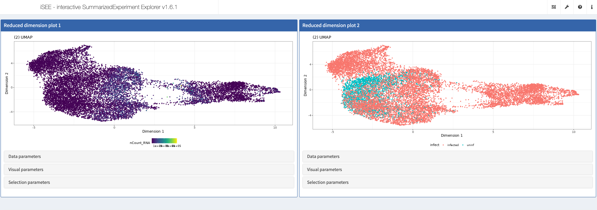
Shiny app https://shiny.mdc-berlin.de/COV/
Authored by Max Delbrück Center
Using iSEE {1.6.1}
CD8 TILs from B16 melanoma tumors
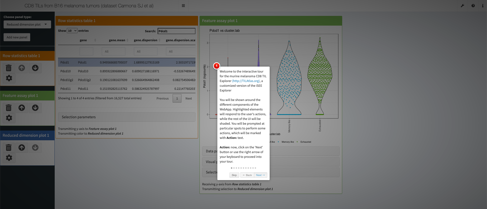
Shiny app https://tilatlas.shinyapps.io/B16_CD8TIL_10X/
Authored by Swiss Portal for Immune Cell Analysis
Using iSEE {1.2.4}
Demonstration iSEE apps (2018)
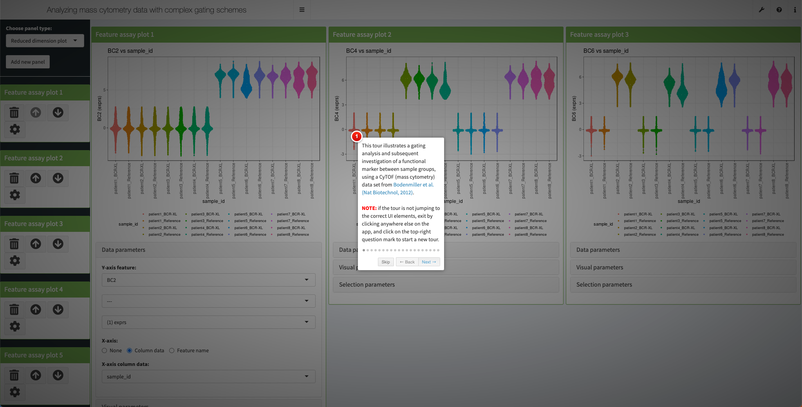
Shiny apps:
https://marionilab.cruk.cam.ac.uk/iSEE_allen (single-cell RNA-seq, mouse visual cortex)
https://marionilab.cruk.cam.ac.uk/iSEE_tcga (RNA-seq, The Cancer Genome Atlas)
https://marionilab.cruk.cam.ac.uk/iSEE_pbmc4k (single-cell RNA-seq, peripheral blood mononuclear cells)
https://marionilab.cruk.cam.ac.uk/iSEE_cytof (mass cytometry, healthy and diseased human donors)
Authored by Marioni group
Using iSEE {1.2.4}
More: Those apps are listed at https://marionilab.cruk.cam.ac.uk/, among other interactive apps from the same author.